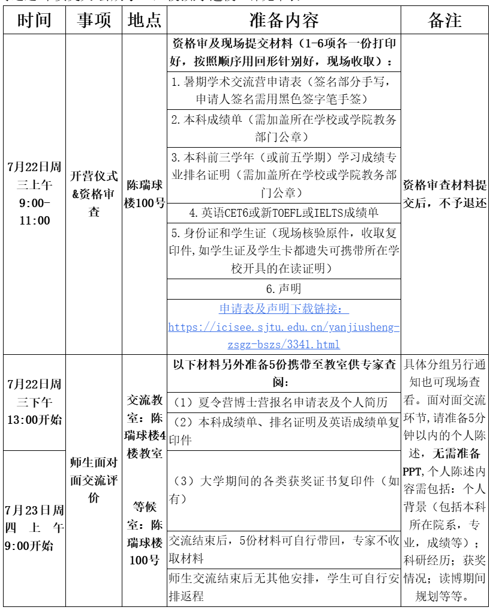
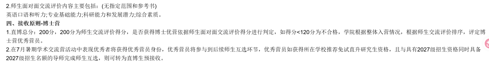

FIELD NOTE / 2026
上海交通大学集成电路学院
直博夏令营
营员规模较大；获得优营后仍需联系导师并完成双向选择。
2026 直博夏令营入营约 900 人面试约 15 分钟
01 / 整体情况
这个夏令营规模比较大，属于“大海营”，当时大约有 900 人入营。我参加的是直博夏令营，流程主要是开营、资格审查和面试。
虽然学院名称是集成电路学院，但里面也有不少老师做 AI 相关方向，其中一些导师和研究方向都比较强。
02 / 官方流程与接收原则


03 / 我的实际面试流程
面试总时长大约 15 分钟。虽然官方材料写的是 5 分钟以内个人陈述，但我实际面试时只进行了大约 2 分钟的中文自我介绍，因此这里按实际情况记为 2 分钟。
之后是英文问答，问题偏科研项目和 AI 专业方向；专业 / 科研问答主要围绕科研项目经历展开，包括做了什么、自己负责什么、采用了什么方法以及结果如何。我当时没有遇到专业课知识问答。
04 / 面试问题补充
我之前记录的线下直博夏令营面试中，还被问到过以下问题：
- 在论文写作过程中是否使用过大模型辅助，主要用在哪些环节？
- 具体如何使用大模型辅助论文写作，是用于语言润色还是生成内容？对模型给出的结果如何核查和修改？
- 你认为论文写作中使用大模型的合理边界是什么？哪些使用方式不能接受？
05 / 优营之后：导师双选更关键
拿到优营之后还需要自己联系导师并完成双向选择。如果导师愿意接收，后续需要填写双选表；建议尽量提前套磁，等优营出来以后再联系可能会比较晚。
如果只是拿到优营，但没有找到愿意双选的导师，那么优营本身作用并不大；完成导师双选后，优营才真正转化为实际接收机会。
06 / 一个重要经验：不要只盯着计算机 / 人工智能学院
找导师时可以先看“研究方向”，再看“学院名称”。集成电路、自动化、机器人、电子信息等学院里，同样可能有做 AI、计算机视觉、机器学习、机器人和智能系统的导师。
如果发现自己喜欢的导师或方向，可以主动套磁，也可以报名对应学院的夏令营或预推免。这些学院里部分 AI 方向的竞争压力可能相对小一些，但具体仍要看当年的招生情况。
07 / 硕士夏令营补充
据我当时了解，硕士夏令营还需要参加专业课考试，不同方向的考试科目可能不同；AI 相关方向我印象中是“信号与系统”相关内容，具体以当年学院通知为准，也可以在小红书等平台了解往年信息。